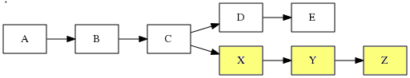
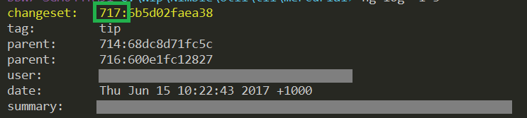
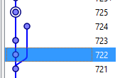
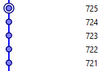

rebasing in mercurial for dimwits.
Step 1. Get rebase
First, enable the rebase extension by editing:
$env:userprofile\mercurial.ini
And in the [extensions] section, write:
rebase =
If you don't have the extension, then running a rebase, e.g. hg rebase -s 745 -d 775, will result in:
hg: unknown command 'rebase'
(did you mean one of qrename, rename, resolve?)
Once you've enabled it, confirm you have the rebase extension installed by typing:
hg help extensions
In the bottom of that output you should see something like:
enabled extensions:
color colorize output from some commands
extdiff command to allow external programs to compare revisions
fetch pull, update and merge in one command (DEPRECATED)
mq manage a stack of patches
rebase command to move sets of revisions to a different ancestor **********
Using rebase
The simplest way to use it is that when you wish to pull and update the repo, instead of using:
hg pull --update # <-- don't do this!
Do this instead:
hg pull --rebase
That will change your local revisions to be applied after any revs that were performed in remote locations (after you last updated)
Let's say while you were making some local revisions, X,Y&Z:

Meanwhile, let's assume some other turkey (let's call him Richard) was making other revisions, D and E.
You want to linearize your commits, so that X Y and Z follow D and E.
Here's the command:
hg rebase -s X -d E
You won't use the literal letters "X" and "E". You'll use the revision numbers. i.e. the number that appears before the revision hash:

So your command might be more like:
$myEarliestCommit = 100
$otherPeoplesLastCommit = 115
hg rebase -s $myEarliestCommit -d $otherPeoplesLastCommit
Here's another example.
The repo looked like this:

I'd commited 722 and 723 locally.
I wanted to move them after 724, which had been done remotely.
I used this command:
hg rebase -s 722 -d 724
Which resulted in:

The linear history I was after.
To see neat log (to help with deciding -s and -d) use:
hg log --template "{rev}: {desc} {author}\n" -l 10
One more time
I seem to have written this out previously, so here it is one more time, this time with ascii art.
hg rebase -s A -d B
Where A is the lowest number of the revisions I've done locally
and B is the highest number of the revisions that have been done remotely.
Once the command is performed A will be rebased to occur straigth after B.
-- J (101)--- K (102)--- L (103)--->
/
--- I (100)-
\-- M (104)--- N (105)--- O (106)--->
Assume that J,K, and L are my local changes.
M,N, and O are some remote changes I need to 'merge' with. In this case i decide to merge by rebasing.
Since "A is the lowest number of the revisions I've done locally", A = 101
and "B is the highest number of the revisions that have been done remotely", B = 106.
So run this command:
hg rebase -s 101 -d 106
And end up with:
--- I (100)--- M (101)--- N (102)--- O (103)--- J (104)--- K (105)--- L (106)--->
Nice and linear